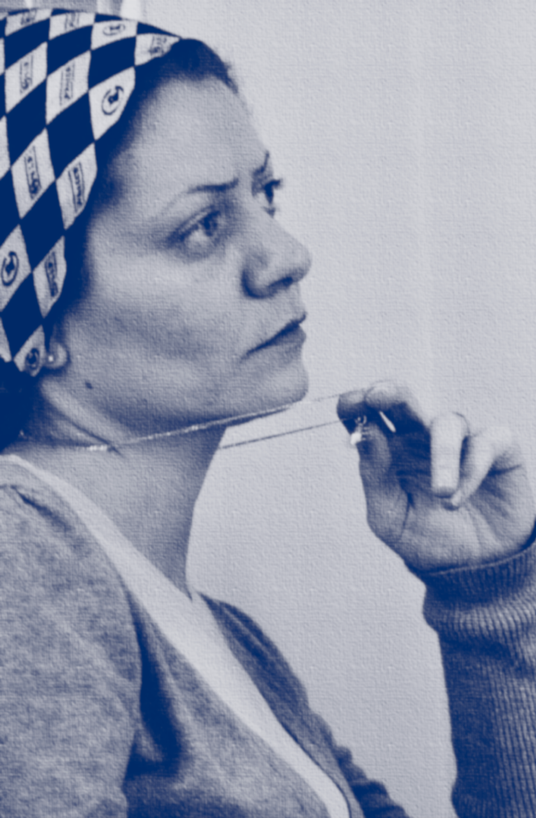

Hamza Al-Khateeb's Story
The price
of speaking up
On 29 April 2011 a brave 13-year-old-boy named
Hamza Al-Khateeb went to a protest with his
parents after several school boys were arrested and
tortured for writing an anti-government slogan
on their school wall.
1
Read more
pictured
Curious student raise their hands in a classroom in
Syria.
Hamza was arrested at the protest.
A month later, his body was returned to his family. He had been severely tortured by the Syrian regime’s forces.
1
His only crime was to stand up for his rights.
Hamza’s death and the school boys’ arrest sparked mass protests across Syria, eventually propelling the country into an ongoing bloody conflict.
1
pictured
The “incriminating” slogan graffitied onto another school wall in Syria. It reads ‘Ejak el door ya Doctor,” or “It is your turn, Doctor”

Our Story
The Violation Documentation Center
The Violation Documentation Center (VDC) is an independent, non-governmental organization that was established in April 2011.
Read more
pictured
As part of a VDC campaign, walls are painted across Douma to raise awareness about the importance of documenting human rights violations.
Our staff members monitor and document human rights violations taking place in Syria. Our objective is to inform the local and international community about the magnitude and development of the Syrian war, and to gather evidence needed to hold perpetrators accountable.
VDC staff members have been threatened for their human rights work in Syria. VDC’s General Coordinator Razan Zaitouneh was abducted in Douma, a city outside Damascus, along with her husband and two other Syrian activists on 9 December 2013.
3
No one has seen or heard from Razan since her disappearance.
pictured
VDC's General Coordinator Razana Zaitouneh before her abduction
